[MIS21-P06] 非粘性平行シアー流の quasi-mode
JpGU 2024 []
[MIS21-P06]
非粘性平行シアー流の quasi-mode
-
要旨
- シアー不安定は中立波の共鳴で起こると説明される
- 共鳴を起こす中立波が見つからない例がある
- quasi-mode は共鳴する中立波の代わりになるか検証
中島 涼輔 (九州大学 大学院理学研究院)
本研究は JSPS 科研費 (JP24K07177,
JP24K00694) と
核融合科学研究所 一般共同研究 (NIFS24KIIC001)
の助成を受けたものです。


非粘性・非圧縮 2 次元シアー流の線形安定性解析
-
Rayleigh 方程式
\[(c-U)\tilde{\zeta}\,=\,\frac{\upd^2U}{\upd y^2}\tilde{\psi}\,,\quad\tilde{\zeta}\,=\,-\left(\frac{\upd^2}{\upd y^2}-k^2\right)\tilde{\psi}\]\[u_x=\frac{\uppartial \psi}{\uppartial y}\,,\quad u_y=-\frac{\uppartial \psi}{\uppartial x}\]
- 背景流 $U(y)\hat{\bm{e}}_x$
- 速度摂動 $\bm{u}=(u_x,u_y)$, 流線関数摂動 $\psi$, 渦度渦度 $\zeta$
- 境界条件 $u_y\to0$ @$y=\pm\infty$ (本発表では $y=y_1$, $y_2$ で放射境界)
- 線形化, 波型の解 $\psi(x,y,t)=\mathrm{Re}[\tilde{\psi}(y;k,c)\upe^{\upi k(x-ct)}]$ etc.
-
$U$ と $x$ 方向波数 $k$ を与えたときの
境界条件を満たす $\tilde{\psi}$ と位相速度 $c$ の組を探す固有値問題
ほぼ 3 層モデル
モード
[補足] ほぼ 3 層モデル
ほぼ 3 層モデルの場合の固有関数
-
$d=0.2a$, $y=\pm2a$ で放射境界
不安定モード 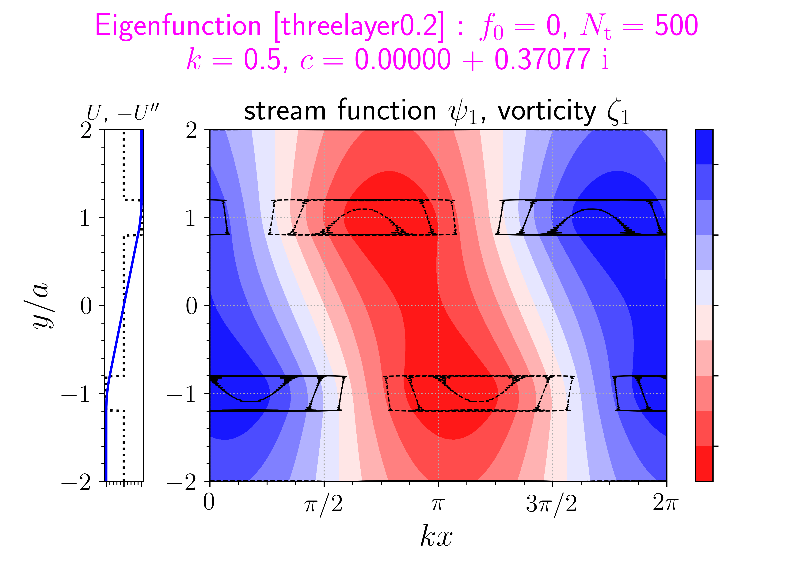
($ka=0.5$)$x>0$ に伝播する中立波 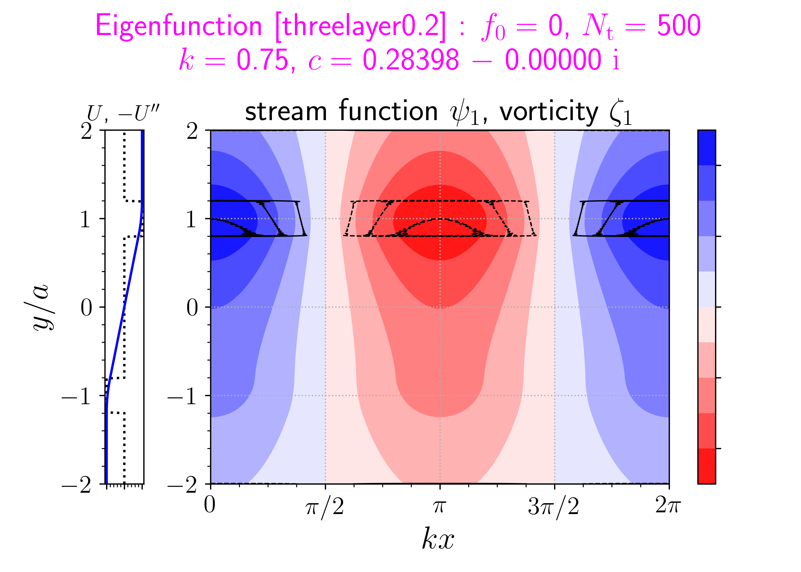
($ka=0.75$)$x<0$ に伝播する中立波 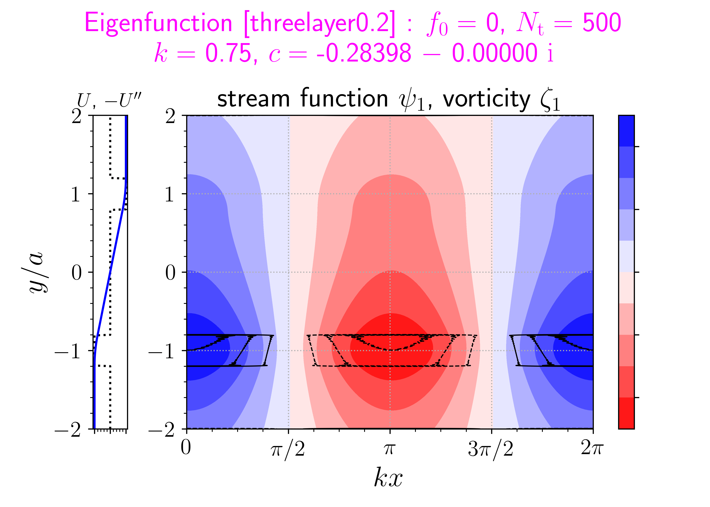
($ka=0.75$)[各図の左] 青線 $U$, 点線 背景渦度勾配 $-(\upd^2 U/\upd y^2)$
[各図の右] 流線関数摂動 $\psi$ (赤 $\leq 0\leq$ 青), 渦度摂動 $\zeta$ (破線 $\leq 0\leq$ 実線) -
シアー不安定は 2 つの中立波の共鳴
- 分散曲線: 中立波の 2 つの曲線が重なって, 不安定モードの曲線へ繋がる
- 固有関数: 2 つの中立波が互いに強め合う配置で不安定
ほぼ 3 層モデル
繋ぎ目
($\pm a-d<y\leq\pm a+d$)
を太らせた場合
モード
ほぼ 3 層モデル
繋ぎ目を
目いっぱい太らせた場合
中立波の分散曲線なし
モード
[補足] ほぼ 3 層モデルの場合の固有関数
繋ぎ目を太らせた場合
[各図の右] 流線関数摂動 $\psi$ (赤 $\leq 0\leq$ 青), 渦度摂動 $\zeta$ (破線 $\leq 0\leq$ 実線)
ほぼ 5 層モデル
$y=\pm2a$ で放射境界
モード
[補足] ほぼ 5 層モデル
[補足] ほぼ 5 層モデルの場合の固有関数
-
$d=0.2a$, $b=a/3$, $U_1=U_0/2$, $y=\pm2a$
で放射境界
不安定モード 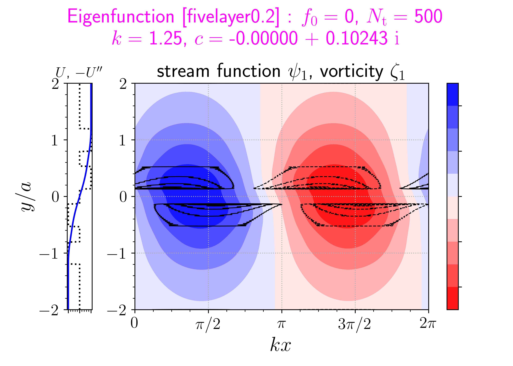
($ka=1.25$)$x>0$ に伝播する中立波 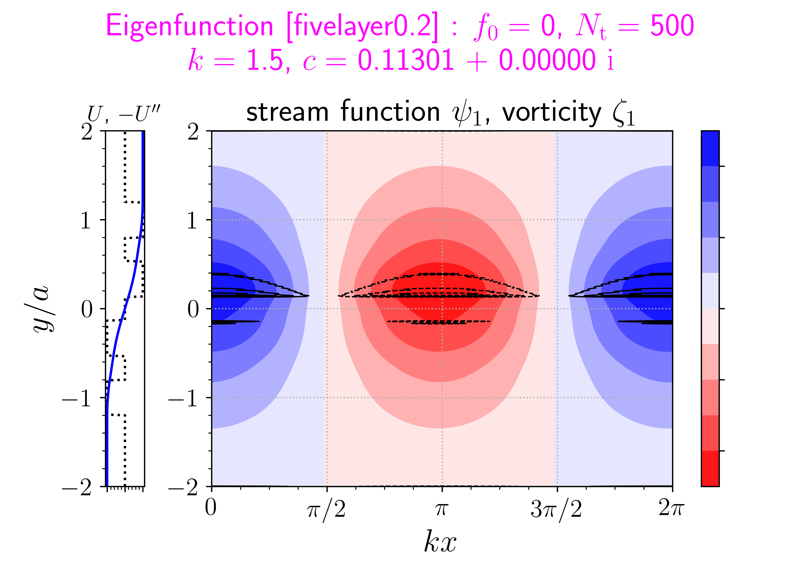
($ka=1.5$)$x>0$ に伝播する中立波 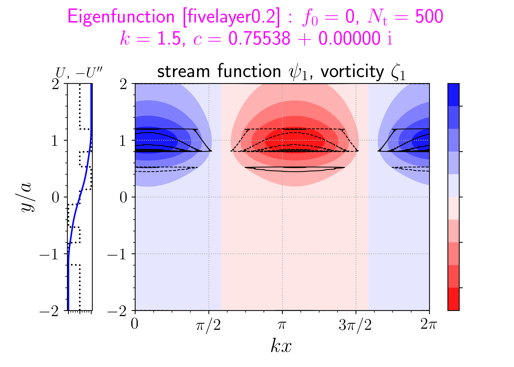
($ka=1.5$)[各図の左] 青線 $U$, 点線 背景渦度勾配 $-(\upd^2 U/\upd y^2)$
[各図の右] 流線関数摂動 $\psi$ (赤 $\leq 0\leq$ 青), 渦度摂動 $\zeta$ (破線 $\leq 0\leq$ 実線)
$\tanh$ 型
中立波の分散曲線なし
モード
[補足] $\tanh$ 型
$y=\pm5a$ で放射境界
[右] 流線関数摂動 $\psi$ (赤 $\leq 0\leq$ 青),
渦度摂動 $\zeta$ (破線 $\leq 0\leq$ 実線)
明らかにしたい問い
-
シアー不安定は 2
つの中立波の共鳴で起こると説明されるが
中立波の分散曲線が行方不明になり, 上手く説明できない例
(e.g. ほぼ 3 層モデル [繋ぎ目を目いっぱい太らせた場合], $\tanh$ 型) がある -
そのような場合,
quasi-mode が共鳴を起こす中立波の
代わりになっているのではないか ?
- Point
-
これまで示した分散関係で
$(\upd^2U/\upd y^2)|_{c=U\text{となる}y}\neq0$ を満たす $c$ (グラフの水色範囲) は
中立波の禁止帯になっている
固有関数の対数特異性
-
$c=U(y)$ となる $y$ を $y_\mathrm{c}$ とする
(Rayleigh 方程式の確定特異点; $c\in\mathbb{C}$ より $y_\mathrm{c}\in\mathbb{C}$) -
$y=y_\mathrm{c}$ まわりの Frobenius 級数解
\[\begin{align*} \tilde{\psi}_\mathrm{I}\,&=\,(y-y_\mathrm{c})+\mathrm{O}\left[(y-y_\mathrm{c})^2\right]\\ \tilde{\psi}_\mathrm{II}\,&=\,\frac{\textcolor{blue}{(\upd^2 U/\upd y^2)|_{y=y_\mathrm{c}}}}{(\upd U/\upd y)|_{y=y_\mathrm{c}}}\tilde{\psi}_\mathrm{I}\textcolor{red}{\ln(y-y_\mathrm{c})}+\mathrm{O}(1) \end{align*}\] -
$\textcolor{blue}{(\upd^2U/\upd
y^2)|_{y=y_\mathrm{c}}}\neq0$ のとき
複素対数関数の性質により
($y$ の実軸上の) 固有関数 $\tilde{\psi}$ は
$\mathrm{Im}(y_\mathrm{c})$ の符号で不連続に変化
分散関係の多価性 → quasi-mode
-
$\tilde{\psi}(y; k, c)$
を知っているていで
$\tilde{\psi}$ を用いて表した不安定モードの分散関係を
$\mathcal{D}=0$ と書く (e.g. ロンスキアン) -
不安定モードの分散曲線に沿って $k$
を動かし
曲線を見失った先を追跡することを考える -
もし仮に $y_\mathrm{c}$ が $y$
の実軸を横切るならば
そのとき $\tilde{\psi}$ は 不連続に変化: $\tilde{\psi}\,\to\,\tilde{\psi}+\mathrm{i}\hat{\psi}$ - それに伴い, 分散関係も不連続に変化 $\mathcal{D}=0\,\to\,\mathcal{D}+\mathrm{i}\hat{\mathcal{D}}=0$
-
この「分散関係」を満たす解がもしあれば
それを quasi-mode (Landau 極) と呼び
普通の固有モード ($\mathcal{D}=0$) と区別する
したときの
$c$ の軌跡 $k$ を動か
したときの
$y_\mathrm{c}$ の軌跡
非物理的な解というわけでもないらしい
- Landau (1946)
-
無衝突プラズマの式から Landau 減衰を導出.
非散逸なのに指数関数的に減衰するプラズマ振動.
波と粒子の相互作用に由来. - Briggs+ (1970)
-
Landau 減衰を非粘性流体の問題に応用.
quasi-mode は連続スペクトルの一部分の別表現だと指摘.
波と流れの相互作用に由来. - Schecter+ (2000)
-
実験と数値実験で quasi-mode の指数的減衰を観測.
代数的減衰 (e.g. Case, 1960) が卓越する前に観察される. - Dixit & Govindarajan (2011)
-
quasi-mode と中立波 (外部重力波)
の相互作用により
不安定モードが生じることを示した.
方法
- スペクトル変形法 [e.g. Spencer & Rasband (1997)]
-
スペクトル変形ありの Chebyshev 選点法
-
座標変換
$y(s)=y_1+(y_2-y_1)g(s)\textcolor{red}{+\upi
f(s)}$
\[\begin{align*} f(s)\,&=\,f_0(s+1)(s-1)\\ g(s)\,&=\,\begin{cases} [\sin^{-1}(0.999s)&\!\!\!\!\!/\sin^{-1}(0.999)+1]/2 \\ & (\text{for $\tanh$-shaped}) \\ (s+1)/2 & (\text{otherwise})\end{cases}\\ \end{align*}\]
- 放射境界条件 $(\upd\tilde{\psi}/\upd y)\pm k\tilde{\psi}=0$ @$y=y_1$, $y_2$
- Chebyshev 多項式展開 $\tilde{\psi}(s)=\sum_{n=0}^{N_\mathrm{t}}\tilde{\psi}_n\mathrm{T}_n(s)$
-
Gauss-Lobatto 選点
$s_m\equiv\cos(m\pi/N_\mathrm{t})$ ($m=1,2,\ldots,N_\mathrm{t}-1$) -
分点上で Rayleigh 方程式を満たす
$N_\mathrm{t}-1$ 本の式に
境界条件 $2$ 本を加えた一般化固有値問題
-
座標変換
$y(s)=y_1+(y_2-y_1)g(s)\textcolor{red}{+\upi
f(s)}$
-
Caution
この方法は $U(y)$ が正則でなければ使えない
したときの
$y_\mathrm{c}$ の軌跡
quasi-mode に
対応する $y_\mathrm{c}$ が
$s$ 軸を
横切っていなければ,
普通の固有モード
($\mathcal{D}=0$) と同じように
quasi-mode
が
求められる
結果
-
$\tanh$ 型 ($y=\pm5a$ で放射境界)
w/o スペクトル変形 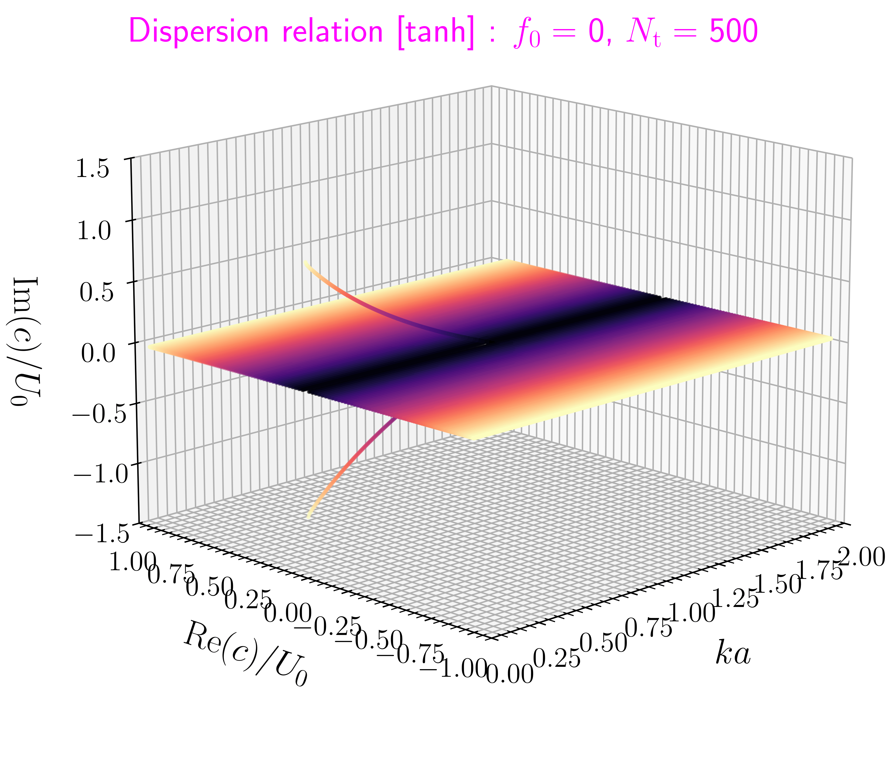位相速度 成長率 波数 色: $|c|$ w/ スペクトル変形 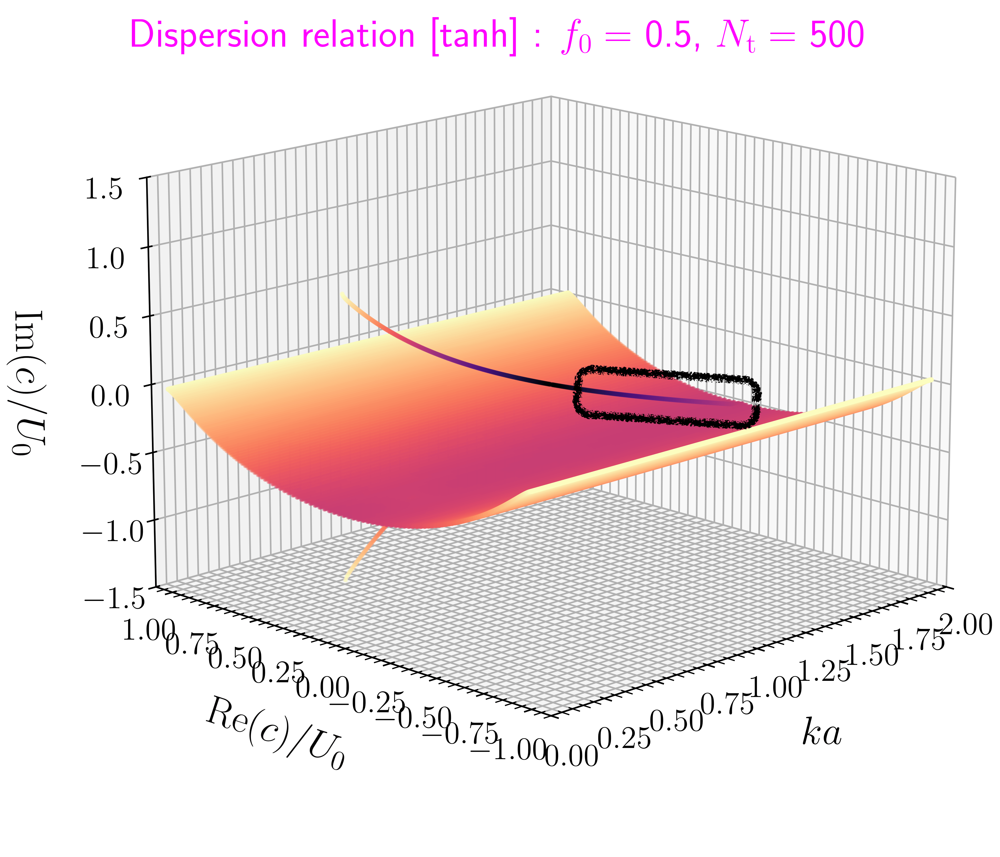 quasi-mode $U(y(s))=c$ より
連続スペクトルは変形位相速度 成長率 波数 色: $|c|$ -
得られた quasi-mode は 1 つだけで,
位相速度は純虚数
- 共鳴を起こす中立波の代わりとは言い難い
[補足] $f_0$ を変化させた場合
$f_0$ を大きくしていき,
$s$ 軸が $U(y)$
の特異点の向こう側をまわるようになると,
$f_0<0$ の場合のようなスペクトル変形になる
結果 (部分系)
-
quasi-mode
は連続スペクトルの一部分だとすると
部分系 (e.g. $0<y<y_2$) の quasi-mode はどうなるか ? -
ほぼ 3 層モデル
(繋ぎ目を目いっぱい太らせた場合)
全体系 w/o スペクトル変形 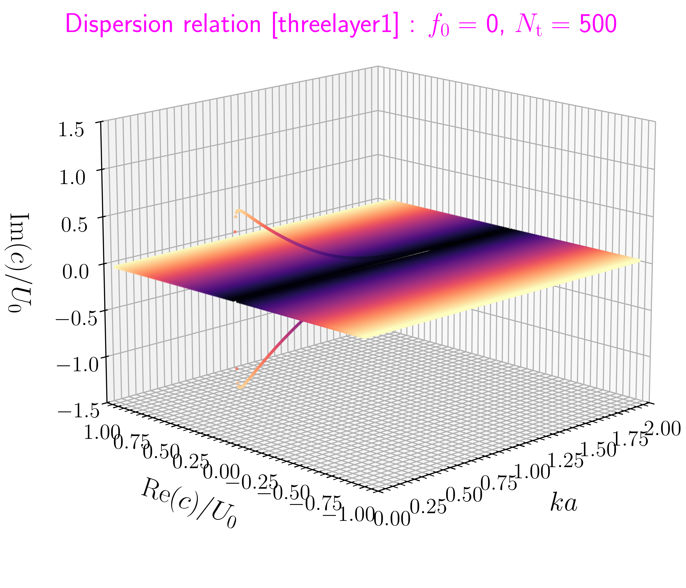位相速度 成長率 波数 色: $|c|$, $y=\pm3a$ で放射境界 部分系 w/ スペクトル変形 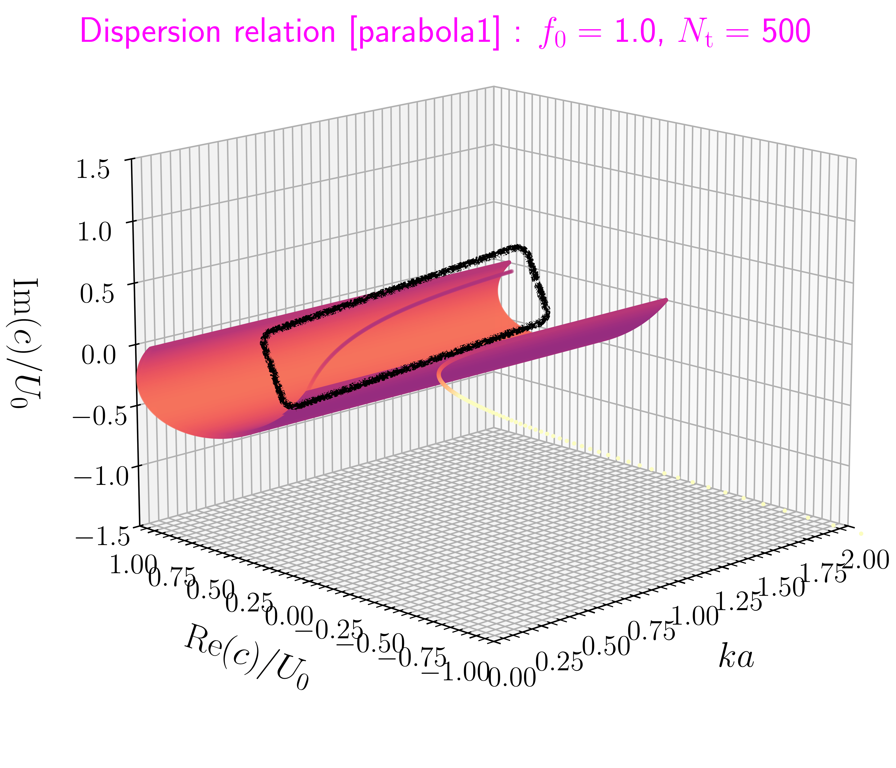位相速度 成長率 波数 色: $|c-0.5|$ quasi-mode $d=a$, $y=0,2a$ で放射境界 -
$0.75<\mathrm{Re}(c)<1$,
$\mathrm{Im}(c)<0$ に quasi-mode
が見つかった
-
部分系 $y_1<y<0$ と部分系
$0<y<y_2$ の
quasi-mode の共鳴として説明できるかもしれない
-
部分系 $y_1<y<0$ と部分系
$0<y<y_2$ の
[補足] ほぼ 3 層モデルの部分系
$d=a$, $y=0, 2a$ で放射境界
$d=a$, $y=-a, 3a$ で放射境界
点線 背景渦度勾配 $-(\upd^2 U/\upd y^2)$
[右] 流線関数摂動 $\psi$ (赤 $\leq 0\leq$ 青),
渦度摂動 $\zeta$ (破線 $\leq 0\leq$ 実線)
結果 (部分系)
-
$\tanh$
型
全体系 w/ スペクトル変形 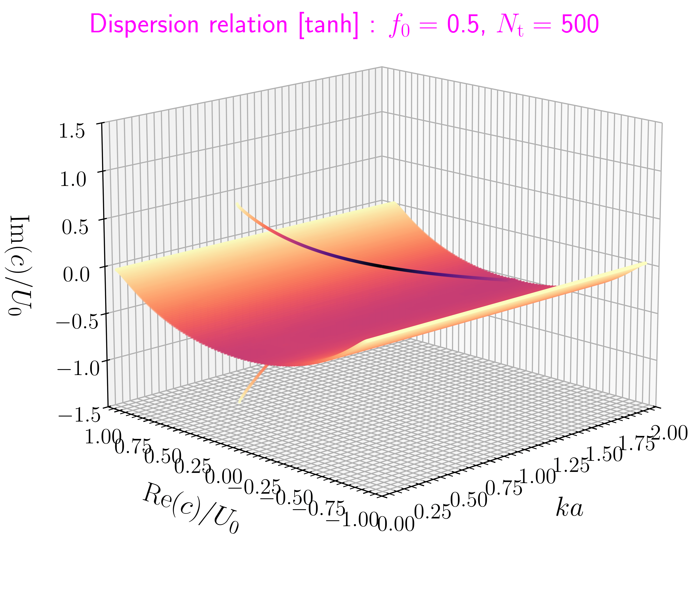位相速度 成長率 波数 色: $|c|$, $y=\pm5a$ で放射境界 部分系 w/ スペクトル変形 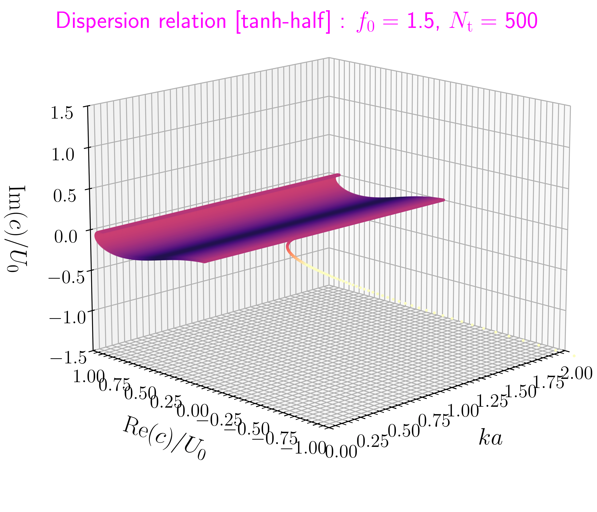位相速度 成長率 波数 色: $|c-0.5|$ $y=0, 5a$で
放射境界 -
全体系では quasi-mode があるのに対し
部分系では quasi-mode は見つからなかった
[補足] $\tanh$ 型の部分系
$y=0, 5a$ で放射境界
$y=0, 5a$ で放射境界
点線 背景渦度勾配 $-(\upd^2 U/\upd y^2)$
[右] 流線関数摂動 $\psi$ (赤 $\leq 0\leq$ 青),
渦度摂動 $\zeta$ (破線 $\leq 0\leq$ 実線)
結論
-
シアー不安定を説明する,
共鳴する中立波のペアがない場合
quasi-mode がその代わりをしているのではないか ?
という仮説の検証を行うため本研究を行った. -
スペクトル変形法を用いて quasi-mode
の「分散曲線」を求めた.
- $\tanh$ 型: 純虚数の位相速度をもつ quasi-mode あり
- ほぼ 3 層モデルの部分系: quasi-mode あり
- $\tanh$ 型の部分系: quasi-mode なし
-
quasi-mode
が見つかる場合と見つからない場合があり,
まだ十分な理解が得られていないので,
仮説の正誤を結論づけることはできない
今後の課題
-
地球外核内部の磁気流体波動に関する研究 (e.g.
Nakashima & Yoshida, arXiv) で, 本研究と類似の問題が生じるため
本発表の手法が有効なのかどうかを吟味する -
quasi-mode の「固有関数」
-
中島 (JpGU 2023)
の方法はあんまりうまくいっていない
-
スペクトル変形法では複素 $y(s)$
上の固有関数しか
求まらない (実空間でない) - Chebyshev 多項式を $y_1\leq\mathrm{Re}(y)\leq y_2$ かつ $\mathrm{Im}(y)=0$ となる複素 $s$ 座標へ解析接続する
-
スペクトル変形法では複素 $y(s)$
上の固有関数しか
-
中島 (JpGU 2023)
の方法はあんまりうまくいっていない
- 小さな粘性散逸を考慮する場合との関係性